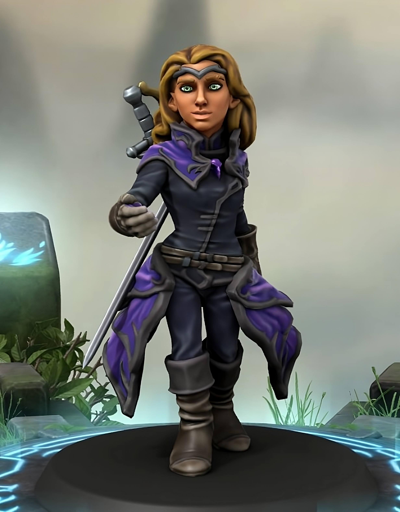
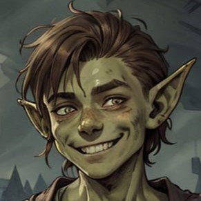

Welcome to my creative space
This part of the site is where I collect the more creative side of my work — a mix of narrative design, game mechanics, character creation, fiction writing, music, and whatever else captures my imagination.
Over the years, I’ve written original one-shots and homebrew content for D&D 5e, exploring different themes, characters, and scenarios that often stretch beyond traditional archetypes. I enjoy building things that feel alive — whether it's a peculiar item with a hidden story or a dilemma woven into an adventure.
Beyond tabletop games, I spend time writing fiction across different genres, from fantasy settings to more introspective stories. I also play electric guitar, sketch out ideas for future projects, and read a lot — not just for inspiration, but as a way to reconnect with how stories take shape.
Dungeons & Dragons
I explore D&D 5e through characters, one-shots, and homebrew mechanics.
Characters
Original characters combining narrative intent and mechanical creativity.

Diana Maréehaute
Diana was my first character played in a long campaign (2 years). She is a Halfling multiclass Blood Hunter 9/ Rogue 8 who was an all-purpose fighter (strong in both close and ranged combat) with no magic whatsoever which also led to quite a few problems for the party due to her recklessness and tendency to bite dying demons.

Marlo Zeller
Marlo is my second important character that I created for a recently started campaign. He is a Goblin multiclass Bard 2/Warlock 2 who is a fearful young man who tries hard to avoid violence and tries as best he can to defend the last. He has done little in his life except loiter, work his day job and play with his new banjo which, for some reason, has made him a surprisingly talented musician.
One-Shots
Short adventures I've written, each with its own tone and structure.
- Whispers in the Fog
- The Ember Pact
- Echoes of Tomorrow
Homebrew Mechanics
Custom systems, features and tweaks to expand storytelling potential.
Underwater Mechanics
Ruleset for handling combat, movement, and acting in underwater environments. Useful for adventures set beneath the surface — both magical and mundane.
Download PDFLayered Backgrounds
Custom background builder to deepen character motivation.
Writing
I enjoy experimenting with fiction, both short stories and novel-length ideas. Some projects are private drafts, others may become sharable content soon.
Reading
I love reading despite the fact that I take long breaks (even months) between one book and another. I find reading (both in English and Italian) very engaging and stimulating especially when I find books that are unusual and alien to my interests or habits that make me see narrative universes or ways of telling a story that I have never seen before. I list below my 5 favourite books (or series of books) in no particular order:
Image credits
- Bubble texture — Paolo Neo, Wikimedia Commons, public domain
Character portraits: attribution is being compiled. If you are the author of one of these images and would like it credited or removed, please get in touch.